The Future of Transportation
The need to move people and goods has been ever present throughout the ages. What continually changes are the modes of transportation. The new WIPO Technology Trends 2025 report reveals the future forms of transportation.
And today we are at a tipping point: climate change and breakthrough technologies are pushing the boundaries of transportation, ushering an era of sustainable and efficient modes of transportation.
Traveling from one place to another is becoming seamless, from walking to cycling to taking the train and then the plane. Driverless cars are already transporting people. Electric vehicles are making transportation more sustainable. New spaceships promise a future where Space becomes the hottest tourist destination.
Be it determining what your next personal vehicle should be to deciding future transportation policies, this rapid transformation of transportation makes it imperative that we understand the technologies of today and more importantly where it is headed in the future.
Why is transportation evolving?
Humanitarian challenges and advances in technology are leading a wave of transportation innovation across the globe. Issues such as overcrowding, climate change, and wealth inequality make these advancements especially attractive to cities and companies, despite the many regulatory and logistical challenges these new ideas bring to the table.
 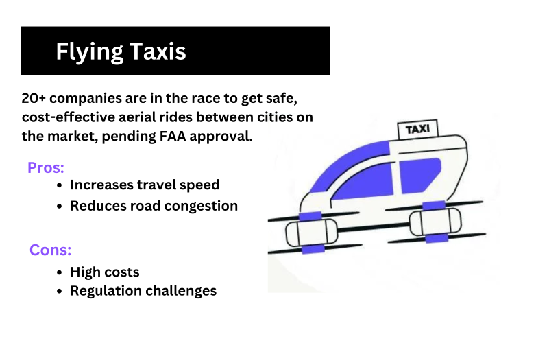
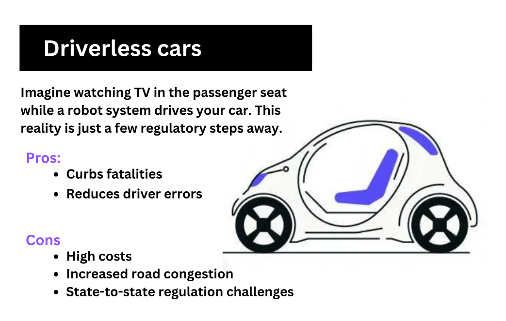
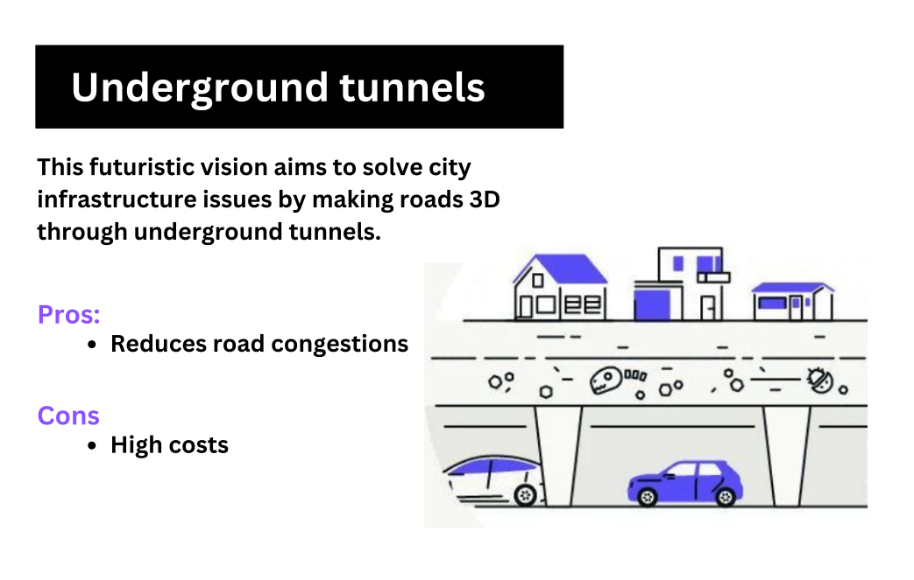
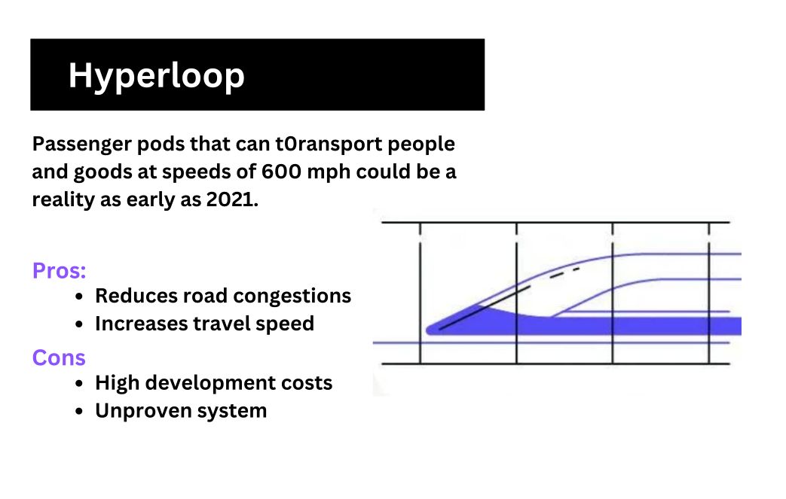
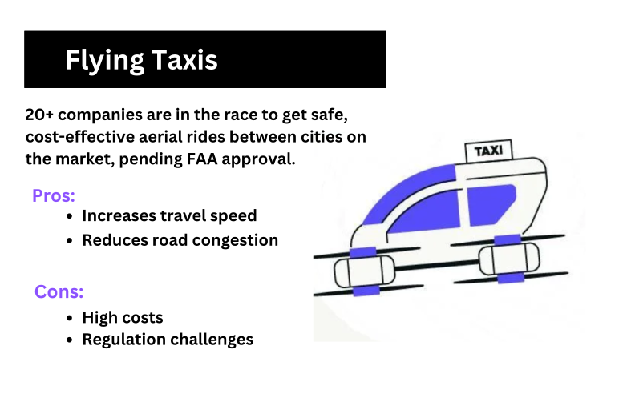
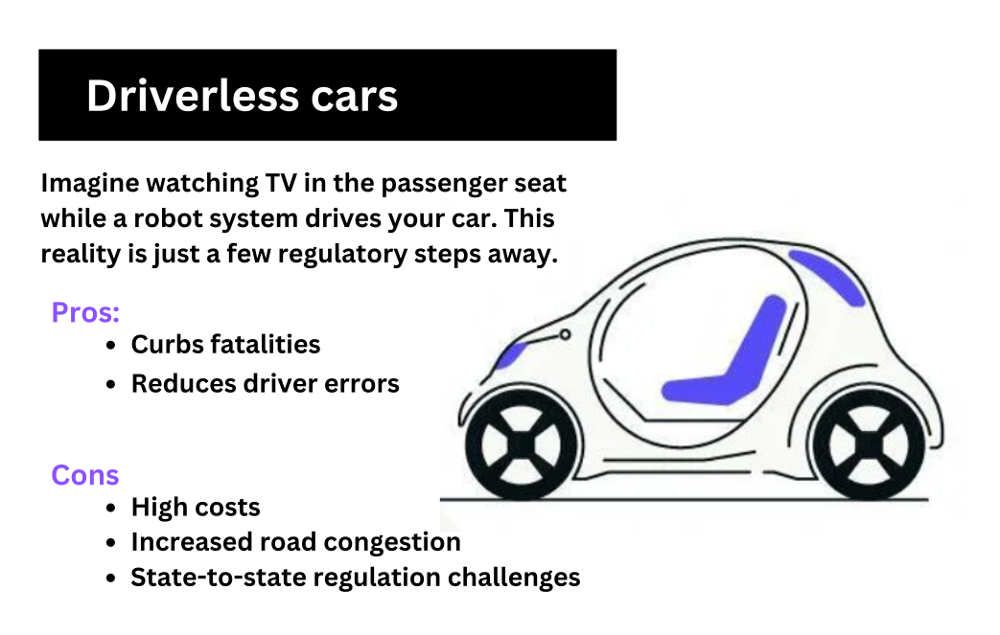
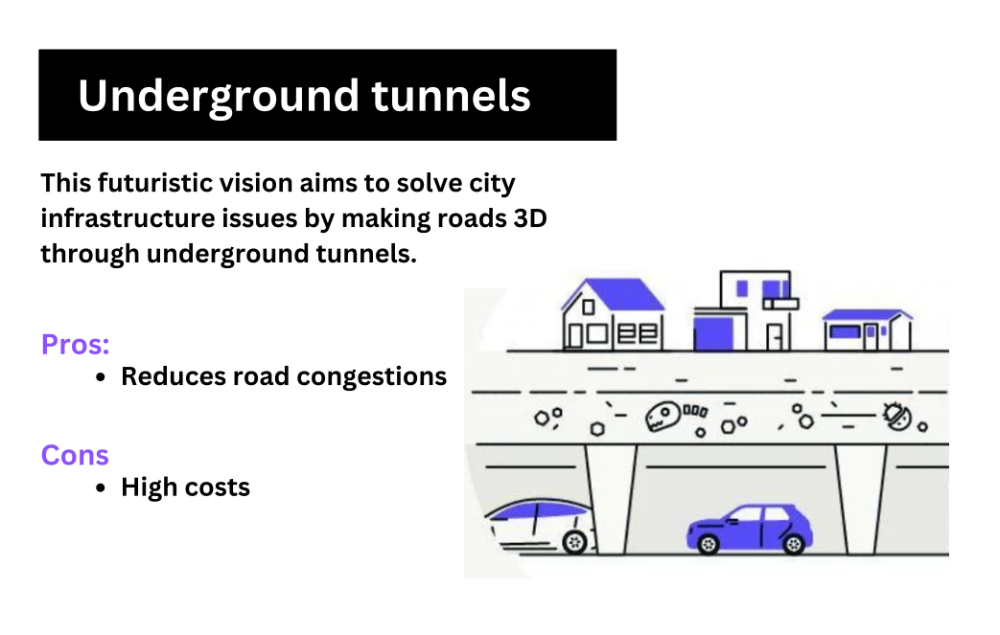
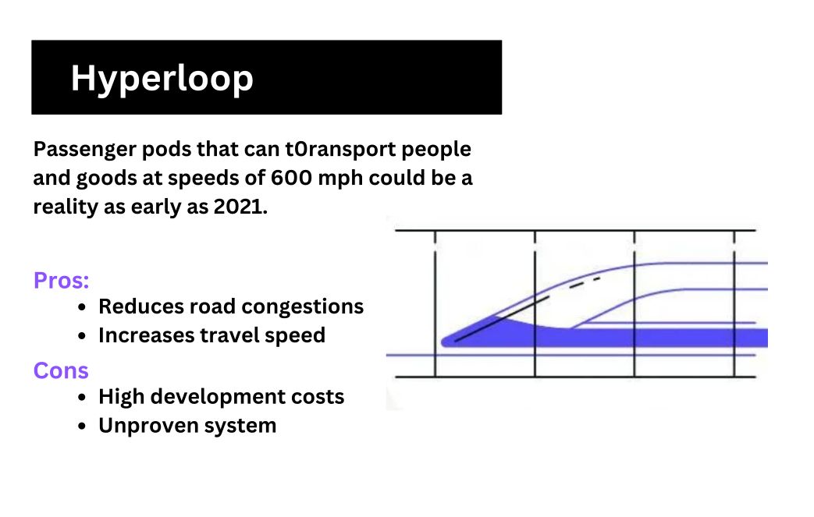
 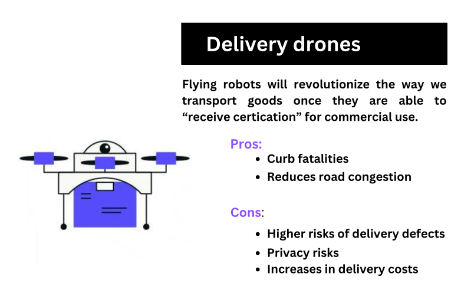
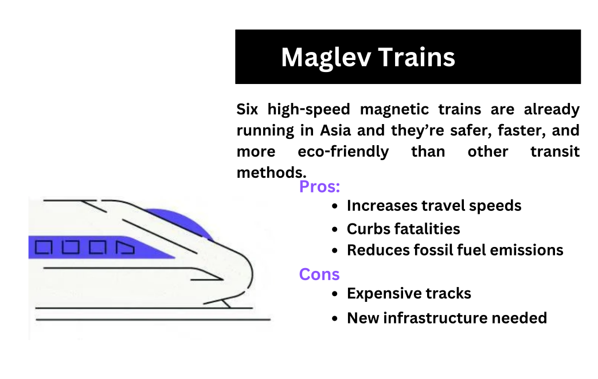
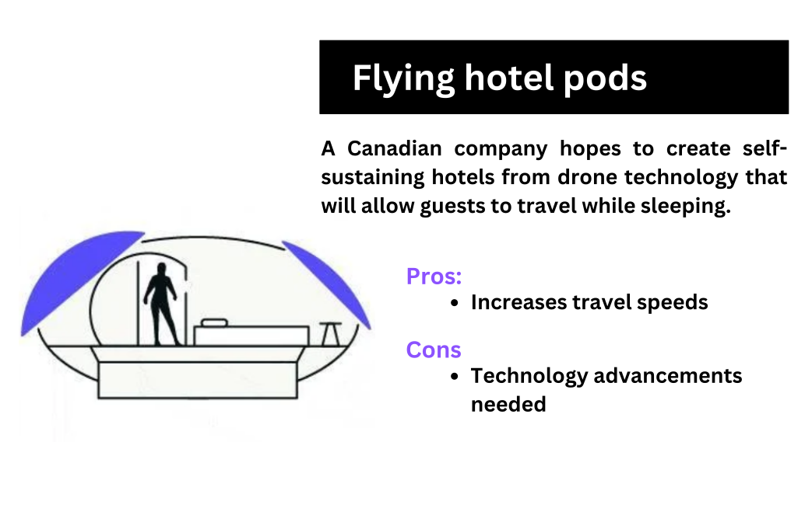
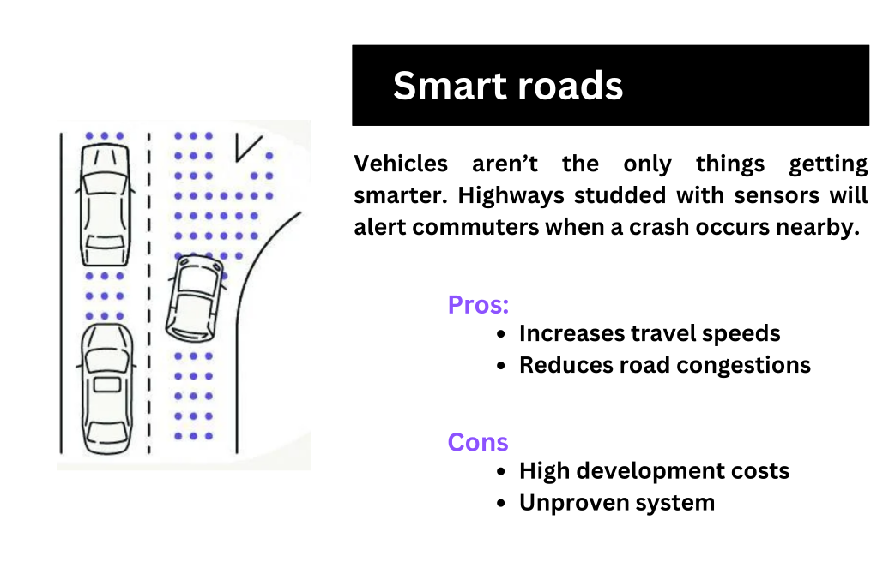
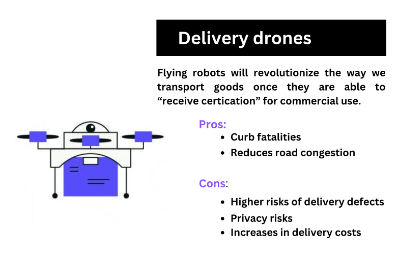
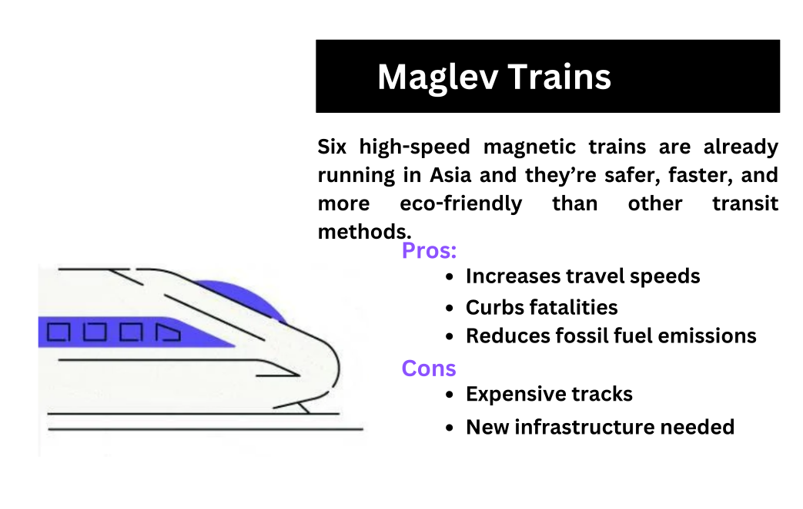
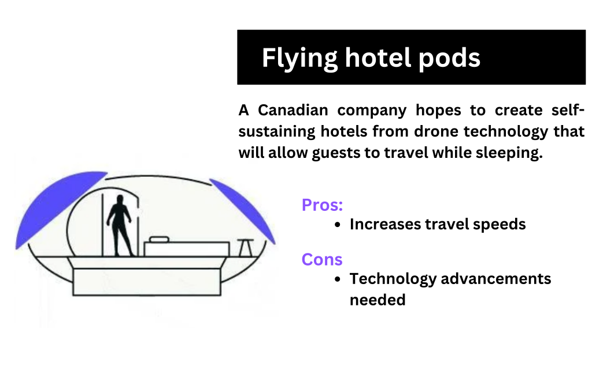
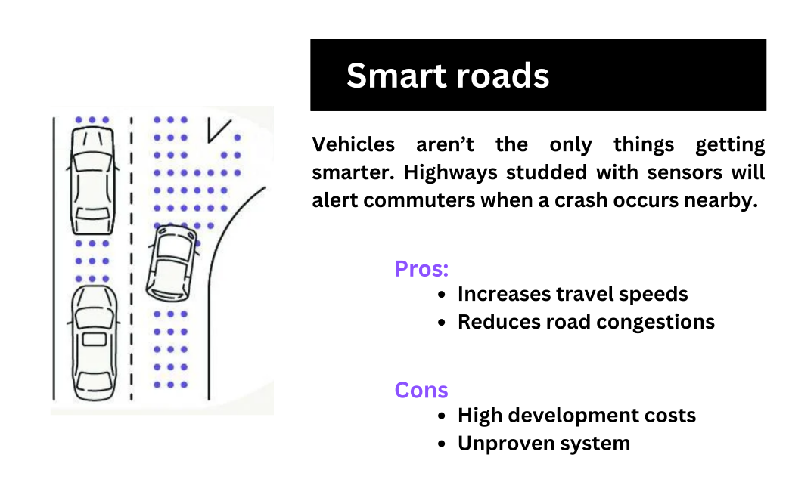